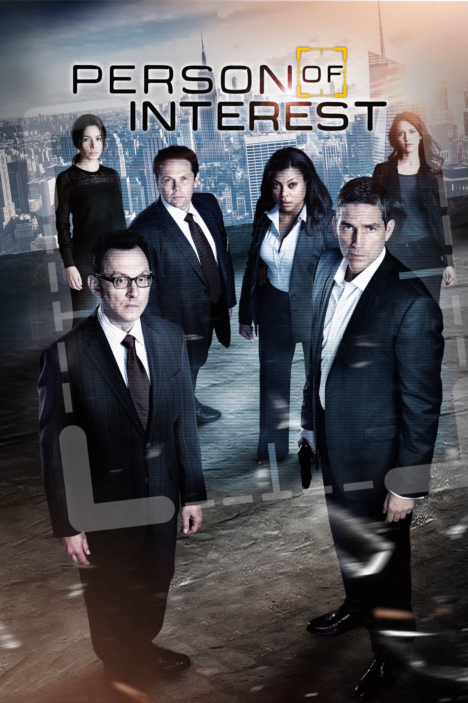

Person of Interest is an American science fiction crime drama television series that aired on CBS from September 22, 2011,to June 21, 2016. Its five seasons comprise 103 episodes. The series was created by Jonathan Nolan; executive producers were Nolan, J. J. Abrams, Bryan Burk, Greg Plageman, Denise Thé, and Chris Fisher.
퍼슨 오브 인터레스트는 SF 범죄 장르의 미국드라마이며 2011년 9월 22일부터 2016년 6월 21일까지 CBS 채널에서 방영하였다. 시즌 5, 총 103개의 에피소드로 구성되어있고, 제작진은 조나단 놀란, J.J 에이브람스 등이 있다.